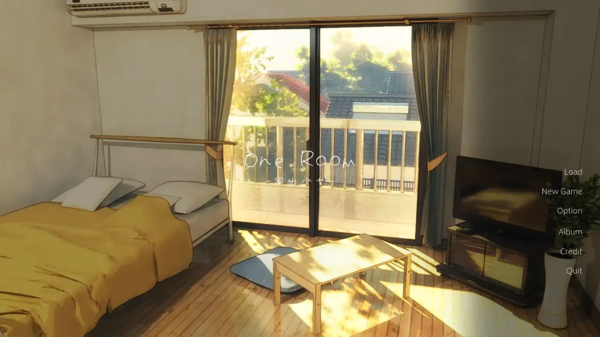
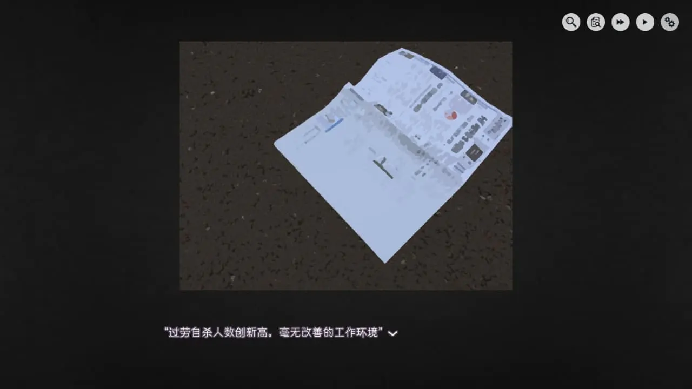
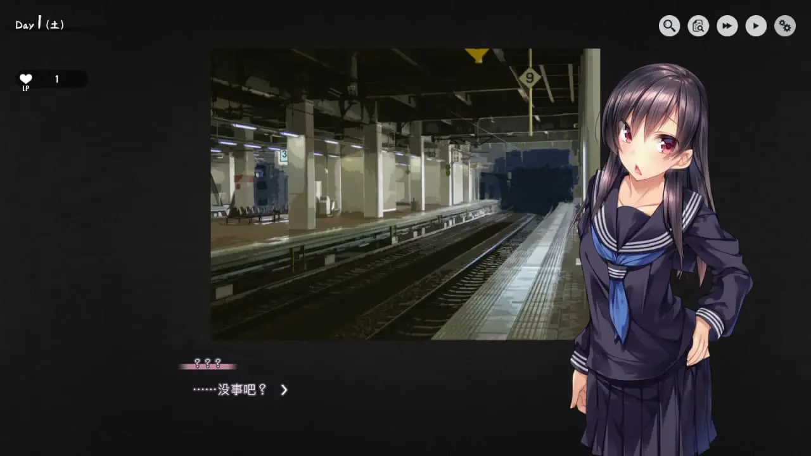
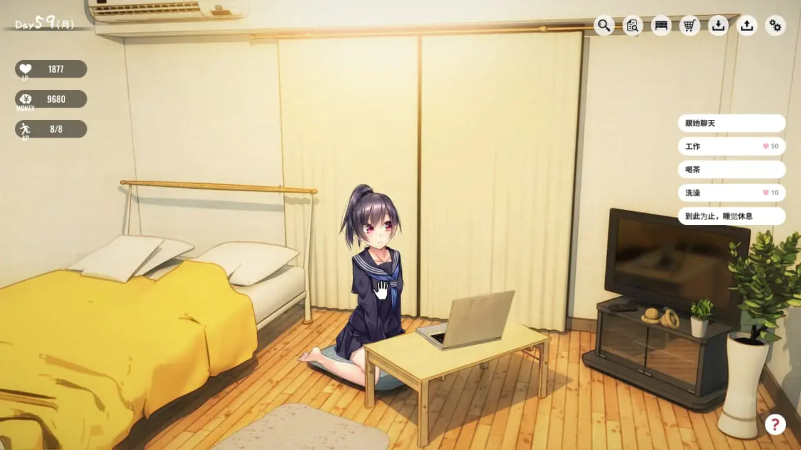
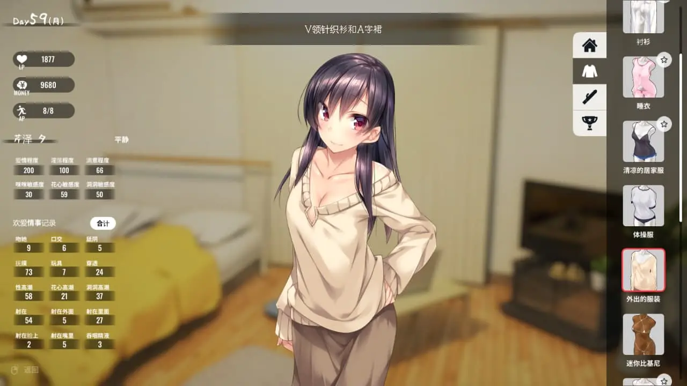

OneRoom 家出少女：SLG 版撿到女高中生
作者：木衛一
社畜程序员车站捡到女子高中生

| 資訊一覽 | |
|---|---|
| 開發商 | パルティア教団 |
| 原画 | maruku |
| 遊戲時長 | 2 ~ 4 小時 |
| 類型 | SLG,纯爱,拔作,数值 |
| 難度 | 低（特殊條件觸發cg） |
| 分級 | R-18 |
故事梗概
你是一個早出晚歸的社畜程序員
平凡，隨處可見
最近，由於不景氣，你每天都要應對大量事務
西西弗斯式無止境的工作逐漸開始磨去你生活的意志……
這時，一個綺麗動人的少女卻闖進你的生活

“叔叔可以收留我……到下周六早上吗？”
她會成為你生活的新希望嗎？
還是說，這不過是你一成不變的苦行生活中一絲微不足道的波瀾？
登場人物
你:
被女高中生叫做叔叔的你
是一個早出晚歸的社畜公務員
最近，漸漸的因為工作壓力而失去生活的信心
被芹澤夕搭訕這件事彷彿是一個契機
可以讓你重新迴歸生活
因此究竟要不要讓她借宿這件事
希望你好好考慮
在車站向你搭話的女高中生
氣質高貴，舉止優雅，嫵媚迷人
從校服上看應該是貴族女高的學生
最近，她正在離家出走，希望能到你家借宿七天
與之相對應的，她願意回報，即使是以肉體的形式
看得出來，她身上有很多難言之隱。
想要進一步的了解她，就需要更進一步的交流.
遊戲截圖





CG
簡評
這種風格如此純（粹做）愛的故事，似乎沒有什麽劇情上評價的必要
沒有令人不快的精子博物館或者ntr劇情，接受能力低的朋友可以放心大膽玩，不必擔心。
遊戲關於男女主的故事背景非常簡單。表明上有分支選項，但實際上並沒有真正意義上的分支劇情
對于這個遊戲之後會不會有更新，會不會加入更多內容這件事，我也一無所知。
不過我隱隱約約的感覺，女主角是男主公司前社長的女兒。
至於立繪和cg，可以說是非常優秀了。
女主角穿衣顯瘦，脫衣顯肉，充分体現出繪師的功力。
衣服有好幾套，情趣道具也有很多。
姿勢更是多種多樣，深喉口交，打樁機式，松葉崩式……感覺不懂江戶四十八手的自己像文盲一樣。
相信一定可以滿足玩家的慾望。
通過下面的下載鏈接下載遊戲本體後，
設置中可以選擇語言，
有日，英，中三種語言可供選擇。
攻略的話，
應該很容易在s1或者bangumi上找到，
就不貼在這了。
還在猶豫是否下載？
這裏有一個 6 分鐘的試玩。
資源與下載
原資源來自：ryuugames
https://www.ryuugames.com/eng-1room-iede-shoujo-free-download/
頁面内自帶下載鏈接和密碼，密碼為ryuugames.com。
游戲可選擇中日英三語，在option内選擇相應語言即可。
对于原创内容，文章作者保留所有权利。转载需要许可，如有需要请前往 🔗️Galgame 频道 留言。
另外，复制链接自由，请随意分享。